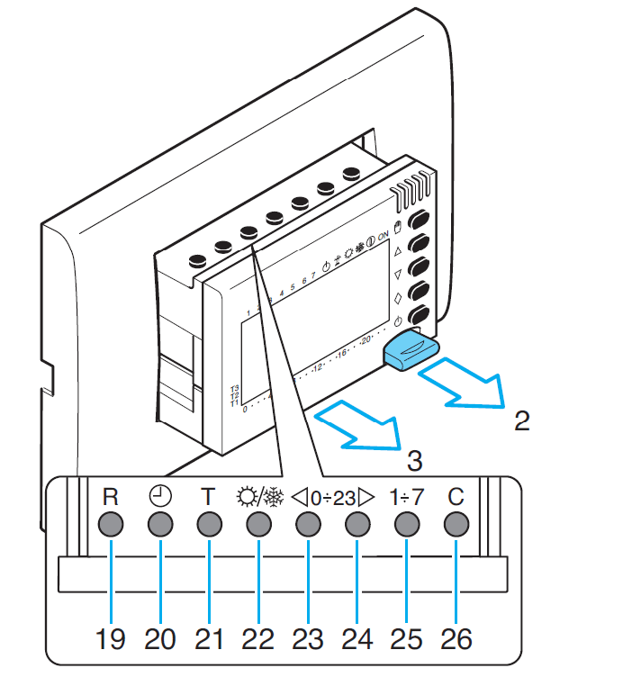
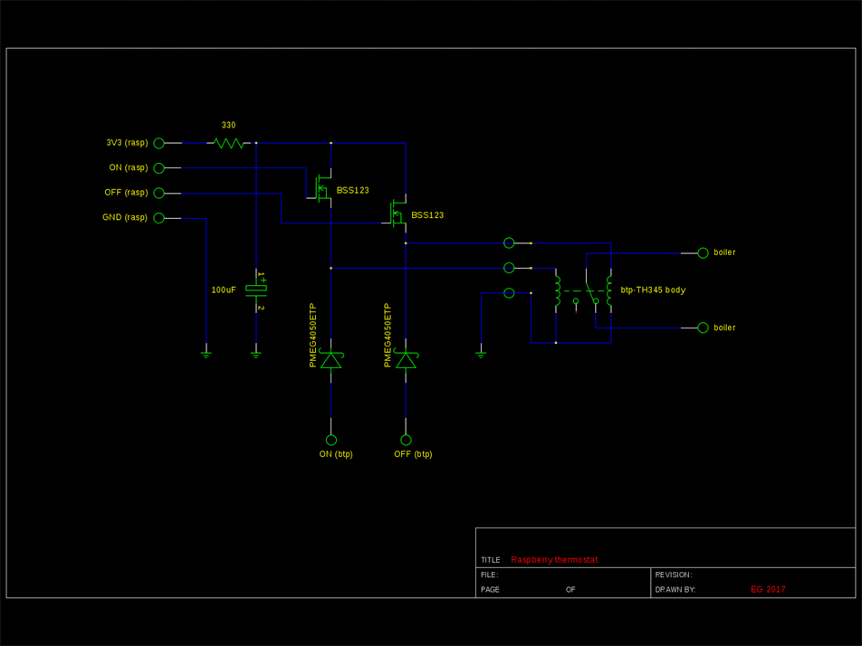
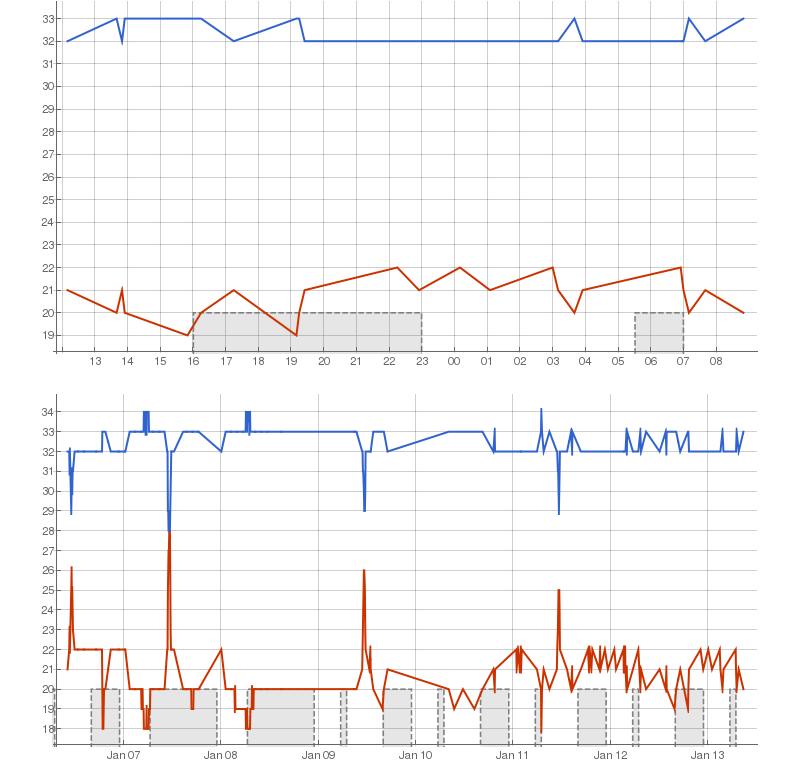
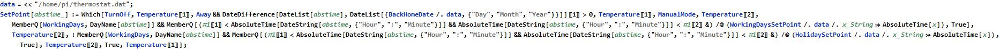
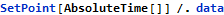
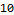
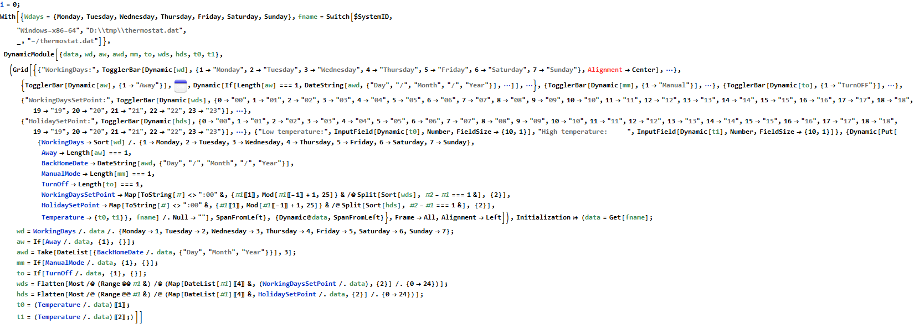
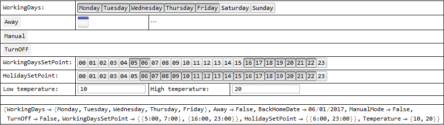
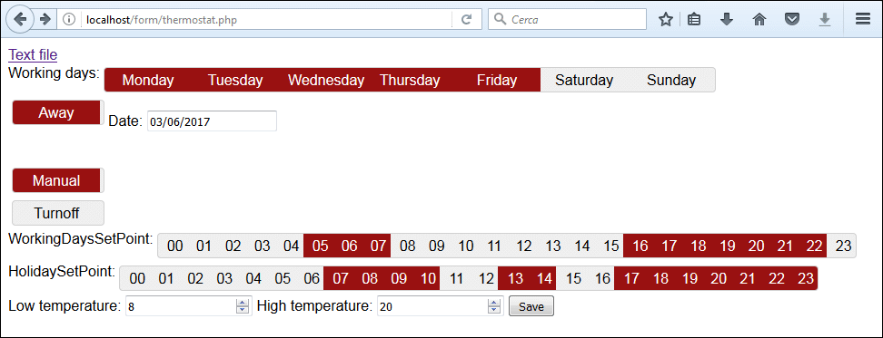

Remote thermostat with Raspberry
The wall thermostat
The wall thermostat is bpt_th345. The body can be pulled out from the case in order to replace batteries and gain access to other setpu buttons.

The case contains a mechanical relay. The body is connected to the case by a three wire connector. The relay is driven by 3V/100mA short pulses. The three wire are: common, switch on and switch off. The relay winings have a 30Ω impedance.
The reliability of the system is guaranteed by two tricks. First, If the body is extracted from the case, it senses the missing load. Once reconnected it gives another pulse to be shure that the relay status matches the controller. Second, when the battery is low an off pulse shuts off the boiler.
Raspberry together with wall thermostat
The idea is to drive the relay directly by two output of the raspberry, but 100mA are too much for one GPIO. The 330Ω resistor limit the current to 10mA. The 100uF capacitor provide enough current to drive the relay.
The wall thermostat con be left connected together with the raspberry as an additional safety. Whlie away, the wall thermostat con be put in manual mode with a lower setpoint. In case of a failure of the raspberry the lower setpoit is kept by the wall thermostat.
The problem is if the raspberry stops working while the relay is closed. The raspberry is capable of sending an email in case the temperature rise over an up threshold or falls down below a down threshold.

The two schottky diodes protect the wall thermostat from the raspberry pulses.
Software for temperature recording
Temperature and umidity are measured by a DHT11 sensor. The following python script reads the values from the sensor.
DHT11_Python/dht11_example.py:
import RPi.GPIO as GPIO
import dht11
import time
import datetime
import sys
# initialize GPIO
GPIO.setwarnings(False)
GPIO.setmode(GPIO.BCM)
#GPIO.cleanup()
# read data using pin 19
instance = dht11.DHT11(pin=19)
#powerup the sensor
GPIO.setup(13, GPIO.OUT)
GPIO.output(13, GPIO.HIGH)
time.sleep(1)
result = instance.read()
if result.is_valid():
print("Temperature: %d C" % result.temperature)
print("Humidity: %d %%" % result.humidity)
while not result.is_valid():
try:
result = instance.read()
if result.is_valid():
print("Temperature: %d C" % result.temperature)
print("Humidity: %d %%" % result.humidity)
except KeyboardInterrupt:
GPIO.output(13, GPIO.LOW)
sys.exit()
GPIO.output(13, GPIO.LOW)
The Mathematica script DHT11.m is called by a crontab job every 5 minutes:
*/5 * * * * xvfb-run -a -s "-screen 0 640x480x24" wolfram -script DHT11.m > /dev/null 2>&1
When a value changes, the new record {Timestamp, temperature, umiditty} is appended to DHT11.log in binary format to save space on disk.
The same script keep updated a graph (CurrentTemp.png) showing a summary of the last week values.

Note that the invocation of the script contains a virtual X server in order to make the Export function to work. This because the Export function is implemented by the Mathematica FrontEnd and it requires an xserver to work.
Thermostat software
The software is written in Mathematica in the same script that records the temperature.
The setpoints and all the other parameter that the user can change remotely are stored in a text file.
thermostat.dat looks like this:
data = {
WorkingDays -> {Monday, Tuesday, Wednesday, Thursday, Friday},
Away -> False,
BackHomeDate -> "6/01/2017",
ManualMode -> False,
TurnOff -> False,
WorkingDaysSetPoint -> {{"5:00", "7:00"}, {"16:00", "23:00"}}, HolidaySetPoint -> {{"6:30", "23:00"}},
Temperature -> {10, 20}
};
The function SetPoint[abstime_] gives the low or high setpoint at the given time taking in account all the parameter.



Since the resolution of the sensor is 1°C, 1°C of hysteresis is good choice for me.
At this point the remote control is done since I connect to raspberry with ssh and I can edit the thermostat.dat in console.
A sort of app can be realised with a webpage. PHP is needed to write the file that is stored server side.
Mathematica interface
To edit the configuration file thermostat.dat, a graphical interface is provided. Thanks to the Dynamic functionality, any change produce an immediate update of the configuration file.


The file is read/written by the Mathematica Kernel. Since it’s possible to launch the kernel remotely through a secure ssh2 tunnel, this is a full working remote interface. But it requires a pc with Mathematica installed.
Web interface
A web interface makes the remote control portable.
The following page first calls init.php that load the configuration file thermostat.dat. The button save calls the update.php that write the new configuration to the configuration file.
